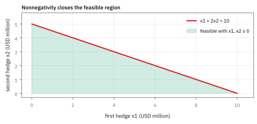

4.4 Polya's Urn and Share Martingales
เมื่อผลในอดีตเพิ่มโอกาสของสีเดิม สัดส่วนยังเป็น martingale ที่มีค่าเฉลี่ยคงที่ แต่แต่ละโหลนิ่งลงที่ค่าต่างกันไปทั่วทั้งช่วง
ตลาดซื้อขายสองแห่งเริ่มด้วยส่วนแบ่งเท่ากัน คำสั่งซื้อขายใหม่แต่ละคำสั่งเลือกตลาดด้วยโอกาสเท่ากับส่วนแบ่งปัจจุบัน เพราะตลาดที่ใหญ่กว่ามีสภาพคล่องดีกว่า (แบบจำลองสมมติ) ทีมกลยุทธ์ถาม: เมื่อคำสั่งสะสมเป็นหมื่น ส่วนแบ่งจะเข้าใกล้ 50:50 เหมือนการโยนเหรียญหรือไม่ และโอกาสที่ระยะยาวสองตลาดยังใกล้เคียงกัน (ส่วนแบ่ง 45% ถึง 55%) เป็นเท่าไร
ลองตอบก่อนเปิดเฉลย
ไม่เข้าใกล้ 50:50 ส่วนแบ่งเฉลี่ยยังเป็น 50% ทุกเวลา แต่ส่วนแบ่งระยะยาวกระจายสม่ำเสมอทั่วช่วง 0 ถึง 1 โอกาสที่จบในช่วง 45% ถึง 55% จึงเท่ากับความกว้างของช่วงคือ 10% เท่านั้น และโอกาสที่ตลาดหนึ่งได้ส่วนแบ่ง 90% ขึ้นไปก็เป็น 10% เท่ากัน ถ้าเป็นเหรียญอิสระ 10,000 ครั้ง โอกาสอยู่ในช่วง 45% ถึง 55% แทบเป็น 100%
ภาพรวมก่อนลงสูตร
แบบจำลองนี้คือ โหลของ Pólya (Pólya's urn): โหลเริ่มด้วยลูกแดงหนึ่งลูก ลูกเขียวหนึ่งลูก หยิบสุ่มหนึ่งลูก ดูสี ใส่คืน แล้วเติมลูกสีเดียวกันอีกหนึ่งลูก สีที่ถูกหยิบจึงมีโอกาสถูกหยิบอีกมากขึ้น เรียกว่าการเสริมแรง (reinforcement) ต่างจากเหรียญที่ทุกครั้งไม่เกี่ยวกัน
สิ่งที่เป็น martingale ไม่ใช่จำนวนลูกแดง (ซึ่งเพิ่มขึ้นได้อย่างเดียว) แต่คือ สัดส่วน ลูกแดง เพราะสัดส่วนมีขอบเขตอยู่ระหว่าง 0 กับ 1 มันจึงต่างจาก ระบบเดิมพันแบบทบ ตรงที่ไม่มีมวลความน่าจะเป็นหนีไปไกลได้ ทฤษฎีบอกว่ามันต้องนิ่งลงที่ค่าหนึ่ง แต่ไม่ได้บอกว่าค่านั้นคือ ½
รูปด้านล่างคือสองครั้งแรกของโหล วางตามสัดส่วนแดง หน้านี้จะนับโอกาสทีละเส้นทาง พิสูจน์ว่าสัดส่วนเป็น martingale หาการแจกแจงหลัง $n$ ครั้ง แสดงว่าลิมิตเป็น Uniform(0,1) แล้วเชื่อมกับการเรียนรู้แบบ Bayes ของเหรียญที่ไม่รู้ความเอียง ก่อนขยายไปโหลเริ่ม $a:b$
รูป — สองครั้งแรกของโหล วางตามสัดส่วนแดง
ศัพท์ที่ใช้ในหัวข้อนี้
- Pólya's urn
- โหลที่หยิบแล้วใส่คืนพร้อมเติมสีเดิมหนึ่งลูก ใช้เป็นแบบจำลองพื้นฐานของการเสริมแรง เช่นส่วนแบ่งตลาดที่ยิ่งใหญ่ยิ่งดึงลูกค้า
- การเสริมแรง (reinforcement) และ path dependence
- ผลในอดีตเปลี่ยนโอกาสในอนาคตไปทางเดิม ผลลัพธ์ระยะยาวจึงขึ้นกับลำดับเหตุการณ์ช่วงแรก
- Exchangeability
- สลับลำดับผลโดยคงจำนวนของแต่ละสีแล้วโอกาสไม่เปลี่ยน อ่อนกว่าความเป็นอิสระมาก ใช้ทำให้การนับโอกาสง่ายขึ้น
- Martingale convergence theorem
- martingale ที่มีขอบเขต (หรือมีขนาดเฉลี่ยคุมได้) ลู่เข้าสู่ลิมิตด้วยความน่าจะเป็นหนึ่ง ใช้รับรองว่าสัดส่วนแดงนิ่งลงแน่ ๆ
- Beta distribution
- การแจกแจงบนช่วง 0 ถึง 1 ที่มี density รูป $x^{a-1}(1-x)^{b-1}$ ใช้บรรยายสัดส่วนที่ไม่แน่นอน เช่นส่วนแบ่งระยะยาวหรือความเอียงของเหรียญที่ไม่รู้ค่า
- Doob martingale
- คำพยากรณ์ $\mathbb E_n[Y]$ ของปริมาณ $Y$ ตัวเดียวกันเมื่อข้อมูลเพิ่มขึ้น เป็น martingale เสมอ ใช้ตรวจว่าการปรับคำพยากรณ์มีรูปแบบที่ทายได้หรือไม่
สัญลักษณ์และหน่วย
| สัญลักษณ์ | ความหมายหลังหยิบ $n$ ครั้ง | หน่วย |
|---|---|---|
| $X_n$ | ลูกแดงในโหล รวมลูกตั้งต้น (เริ่ม $X_0=1$) | ลูก |
| $J_n=X_n-1$ | จำนวนครั้งที่หยิบได้แดง | ครั้ง |
| $n+2$ | ลูกทั้งหมดในโหล | ลูก |
| $M_n=X_n/(n+2)$ | สัดส่วนแดง ซึ่งเท่ากับโอกาสได้แดงครั้งหน้า | ไม่มีหน่วย |
| $M_\infty$ | สัดส่วนแดงระยะยาว (ลิมิต) | ไม่มีหน่วย |
| $\mathcal F_n$ | ลำดับสีที่เห็นถึงครั้งที่ $n$ | — |
ขั้นที่ 1 — เขียนกติกาเป็นโอกาสการเปลี่ยนสถานะ
ก่อนคำนวณอะไร ต้องแปลกติกาเป็นโอกาส หลังหยิบ $n$ ครั้ง โหลมีลูกทั้งหมด $n+2$ ลูก (เริ่ม 2 ลูก เพิ่มครั้งละ 1) ถ้าตอนนี้มีแดง $k$ ลูก ครั้งหน้าจะได้แดงด้วยโอกาส $k/(n+2)$
บรรทัดแรก: หยิบได้แดงแล้วเติมแดง จำนวนแดงเพิ่มหนึ่ง บรรทัดที่สอง: หยิบได้เขียว ($n+2-k$ ลูกจาก $n+2$) แดงคงเดิม สองโอกาสรวมกันเป็น 1 พอดี
สังเกตว่าโอกาสครั้งหน้าขึ้นกับ $k$ ที่สะสมมา การหยิบแต่ละครั้งจึงไม่เป็นอิสระกัน แต่ขึ้นกับอดีตผ่าน $X_n$ ตัวเดียว ไม่ต้องรู้ลำดับทั้งหมด
ขั้นที่ 2 — นับสองครั้งแรกด้วยมือ
นับทุกเส้นทางของสองครั้งแรก เพื่อเห็นว่าการเสริมแรงเปลี่ยนการแจกแจงอย่างไร
โจทย์ให้อะไรมาบ้าง: เริ่มแดง 1 เขียว 1 ให้ R แทนแดง G แทนเขียว ครั้งแรกแต่ละสีมีโอกาส ½ ถ้าได้แดง โหลเป็นแดง 2 เขียว 1 โอกาสแดงครั้งต่อไปจึงเป็น ⅔
คำตอบ: หยิบได้แดง 0, 1, 2 ครั้งด้วยโอกาส ⅓ เท่ากัน (RG กับ GR รวมกันเป็น ⅓) สัดส่วนแดงจึงเป็น ¼, ½, ¾ อย่างละ ⅓ ค่าเฉลี่ย $\tfrac13(\tfrac14+\tfrac12+\tfrac34)=\tfrac12$ แต่ไม่กระจุกตรงกลางแบบเหรียญสองครั้งที่ให้ 0, 1, 2 หัวด้วยโอกาส ¼, ½, ¼
ตรวจเองใน 10 วินาที: RG กับ GR มีโอกาสเท่ากันแม้ลำดับต่าง ตัวส่วนเป็น $2\times3$ ทั้งคู่ และตัวเศษเป็น $1\times1$ ทั้งคู่ การสลับลำดับโดยคงจำนวนแต่ละสีแล้วโอกาสไม่เปลี่ยนเรียกว่า exchangeability ซึ่งจะใช้ตอนนับการแจกแจงหลัง $n$ ครั้ง
รูป — การเสริมแรงย้ายน้ำหนักจากตรงกลางไปที่ปลาย

ขั้นที่ 3 — จำนวนแดงโตขึ้น แต่สัดส่วนไม่มี drift
คำถามหลักของหน้า: อะไรในโหลเป็น martingale จำนวนแดงไม่ลดลงเลยและมีโอกาสเพิ่ม จึงไม่ใช่แน่ ลองสัดส่วน $M_n=X_n/(n+2)$ ใช้โอกาสการเปลี่ยนสถานะที่เขียนไว้ตอนต้น ตั้ง $X_n=k$
บรรทัดแรกถ่วงสองกรณีของครั้งหน้า กระจายตัวเศษได้ $k^2+k+kn+2k-k^2=k(n+3)$ บรรทัดที่สองจึงบอกว่าจำนวนแดงคาดว่าจะโตด้วยตัวคูณ $(n+3)/(n+2)$ เป็น submartingale
บรรทัดที่สามคือท่าสำคัญ: ตัวส่วนของสัดส่วนครั้งหน้าคือ $n+3$ ซึ่งรู้ล่วงหน้าแน่นอน (ขนาดโหลไม่สุ่ม) จึงดึงออกนอกค่าเฉลี่ยได้ ตัวคูณการโต $(n+3)$ ของตัวเศษหักกับตัวส่วนพอดี เหลือ $k/(n+2)$ คือสัดส่วนวันนี้ $M_n$ คำนวณได้จากสิ่งที่เห็นแล้วและอยู่ระหว่าง 0 กับ 1 จึง adapted และ integrable ครบนิยาม martingale ใน filtration และ martingale
ความหมายเชิงภาพคือคานในรูปด้านล่าง: ถ้าได้แดง สัดส่วนขยับขึ้นน้อย ถ้าได้เขียว สัดส่วนขยับลงมาก แต่ได้แดงบ่อยกว่าในสัดส่วนที่ชดเชยกันพอดี
รูป — คานสมดุลหลังหยิบได้แดงครั้งแรก
ขั้นที่ 4 — พยากรณ์: แปลงจำนวนเป็นสัดส่วนก่อนเสมอ
martingale ให้คำพยากรณ์ทันที แต่ต้องพยากรณ์ตัวที่เป็น martingale คือสัดส่วน แล้วค่อยแปลงกลับเป็นจำนวน
โจทย์ให้อะไรมาบ้าง: หยิบไปแล้ว 100 ครั้ง ในโหลมีแดง 70 ลูก (รวมลูกตั้งต้น แปลว่าหยิบได้แดง 69 ครั้ง) ถามว่าหลังหยิบครบ 200 ครั้งจะมีแดงเฉลี่ยกี่ลูก
คำตอบ: ประมาณ 138.63 ลูก ขนาดโหลหลัง 200 ครั้งคือ 202 ลูกซึ่งรู้แน่นอน จึงคูณสัดส่วนที่คาดเข้าไปได้ตรง ๆ ค่าเฉลี่ยไม่ต้องเป็นจำนวนเต็ม แม้แต่ละเส้นทางจะเป็นจำนวนเต็มเสมอ
ตรวจเองใน 10 วินาที: ตอบ 70 คือถือว่าจำนวนแดงเป็น martingale ซึ่งผิดตัว ตอบ 101 ($202\times\tfrac12$) คือลืมข้อมูล 100 ครั้งแล้วกลับไปใช้สัดส่วนตั้งต้น ทั้งสองต่างจาก 138.63 มาก
ขั้นที่ 5 — การแจกแจงหลัง $n$ ครั้ง: ทุกจำนวนแดงมีโอกาสเท่ากัน
สองครั้งแรกให้ ⅓ เท่ากันทุกค่า สิบครั้งให้ 1/11 เท่ากัน ขั้นนี้พิสูจน์ว่าเป็นแบบนี้ทุก $n$ ดูลำดับหนึ่งที่หยิบ $n$ ครั้งได้แดง $j$ ครั้ง ตัวส่วนของโอกาสทุกครั้งคูณกันได้ $2\cdot3\cdots(n+1)=(n+1)!$ ไม่ว่าลำดับเป็นอย่างไร ส่วนตัวเศษฝั่งแดงวิ่ง $1,2,\ldots,j$ และฝั่งเขียววิ่ง $1,2,\ldots,n-j$ แทรกกันแบบใดก็ได้
บรรทัดแรกไม่ขึ้นกับลำดับ นี่คือ exchangeability ที่เห็นในสองครั้งแรก บรรทัดที่สองคูณด้วยจำนวนลำดับ $\binom nj=\frac{n!}{j!(n-j)!}$ (เหมือนใน binomial distribution) แฟกทอเรียลหักกันเหลือ $n!/(n+1)!=1/(n+1)$ จำนวนแดงที่หยิบได้จึงสม่ำเสมอบน $0,1,\ldots,n$ ($0!=1$ ทำให้กรณีไม่มีแดงเลยหรือแดงทุกครั้งใช้สูตรเดียวกัน)
บรรทัด variance ได้จาก $\mathbb E[J_n]=n/2$ และ $\mathbb E[J_n^2]=\frac1{n+1}\sum_{j=0}^nj^2=\frac{n(2n+1)}6$ ลบกันได้ $\frac{n(n+2)}{12}$ แล้วหารด้วย $(n+2)^2$ เพราะ $M_n=(1+J_n)/(n+2)$ SD ของสัดส่วนหลัง 1 ครั้งคือ $1/6\approx0.167$ หลัง 2 ครั้ง $\approx0.204$ หลัง 2,000 ครั้ง $\approx0.2885$ ความกว้างข้ามโหล เพิ่มขึ้น เข้าหา $\sqrt{1/12}\approx0.2887$ ไม่หดลงแบบเหรียญที่ SD ของสัดส่วนเป็น $0.5/\sqrt n$
รูป — หลัง 30 ครั้ง: โหลราบทั้งช่วง เหรียญกระจุกกลาง

ขั้นที่ 6 — หลัง 100 ครั้ง โอกาสที่ยังใกล้เสมอเท่าไร
ใช้การแจกแจงสม่ำเสมอตอบคำถามของทีมกลยุทธ์ที่จำนวนครั้งจำกัด นิยาม “ใกล้เสมอ” ว่าสัดส่วนแดงอยู่ระหว่าง 45% ถึง 55% รวมขอบ
โจทย์ให้อะไรมาบ้าง: $n=100$ สัดส่วน $M_{100}=(1+J_{100})/102$ และ $J_{100}$ สม่ำเสมอบน 0 ถึง 100
คำตอบ: ราว 10.9% มีจำนวนเต็ม 11 ค่า (45 ถึง 55) ที่เข้าเงื่อนไข แต่ละค่ามีโอกาส 1/101 เทียบกับเหรียญอิสระ 100 ครั้ง ช่วงเดียวกันคือ 45 ถึง 55 หัว นับ binomial ตรง ๆ ได้ราว 72.9% (normal approximation พร้อมปรับความต่อเนื่อง: SD 5, $z=(55.5-50)/5=1.1$ ได้ $2\Phi(1.1)-1\approx72.9\%$ เช่นกัน)
ตรวจเองใน 10 วินาที: ช่วงกว้าง 10 จุดเปอร์เซ็นต์ บนการแจกแจงที่เกือบราบทั้งช่วง 0 ถึง 1 จึงควรได้ราว 10% ตัวเลข 10.9% เกินมานิดเพราะนับขอบทั้งสองข้างของค่าที่ไม่ต่อเนื่อง
ขั้นที่ 7 — ลิมิตมีจริง และลิมิตเป็น Uniform(0,1)
เส้นทางของโหลหนึ่งใบนิ่งลงไหม และถ้านิ่ง นิ่งที่ไหน ข้อแรกตอบด้วยทฤษฎี ข้อสองตอบด้วยการแจกแจงที่เพิ่งได้ $M_n$ เป็น martingale ที่อยู่ระหว่าง 0 กับ 1 ทุกเวลา martingale convergence theorem จึงรับรองว่า $M_n$ ลู่เข้าสู่ลิมิต $M_\infty$ ด้วยความน่าจะเป็นหนึ่ง
บรรทัดแรกนับจุด: ค่าที่เป็นไปได้ของ $M_n$ คือ $\tfrac{1}{n+2},\tfrac{2}{n+2},\ldots,\tfrac{n+1}{n+2}$ แต่ละจุดโอกาส $\tfrac1{n+1}$ จำนวนจุดที่ไม่เกิน $x$ คือราว $x(n+2)$ (ปัดลง และไม่เกิน $n+1$ จุด) พอ $n$ โตขึ้น สัดส่วน $(n+2)/(n+1)$ เข้าหา 1 CDF จึงเข้าหา $x$ ซึ่งคือ CDF ของ Uniform(0,1)
ทำไมทฤษฎีลู่เข้าใช้ได้ตรงนี้ แต่พังกับระบบเดิมพันแบบทบ เพราะขอบเขต 0 ถึง 1 ห้ามไม่ให้มวลความน่าจะเป็นเล็ก ๆ พาค่าที่ใหญ่ขึ้นเรื่อย ๆ หนีไป ค่าเฉลี่ยจึงผ่านลิมิตมาได้: $\mathbb E[M_\infty]=\tfrac12=M_0$ และใช้ optional stopping ได้กับทุก stopping time
ประโยคที่ต้องแยกให้ออก: “ลู่เข้า” ไม่ได้แปลว่า “ลู่เข้า ½” แต่ละโหลนิ่งที่ค่าของตัวเอง และค่านั้นกระจายราบทั้งช่วง โอกาสที่ลิมิตเท่ากับ 0 หรือ 1 พอดีเป็นศูนย์ คำว่า “ฝ่ายหนึ่งได้ส่วนใหญ่” จึงตรงกว่า “ฝ่ายหนึ่งกินรวบ”
รูป — แต่ละเส้นทางนิ่ง แต่นิ่งคนละที่

ขั้นที่ 8 — มองอีกมุม: โหลคือเหรียญที่ไม่รู้ความเอียง
ทำไมผลลัพธ์ต้องเป็น Uniform พอดี มีคำอธิบายที่สวยกว่าการนับ: สมมติมีเหรียญที่ความเอียง $\theta$ (โอกาสออกแดง) ถูกสุ่มมาจาก Uniform(0,1) ครั้งเดียวตอนเริ่ม แล้วโยนเหรียญนั้นซ้ำอย่างอิสระ เราไม่รู้ $\theta$ ได้แต่เรียนรู้จากผลที่เห็น
บรรทัดแรกเฉลี่ยโอกาส binomial ข้ามทุกความเอียงที่เป็นไปได้ ตาม tower property อินทิกรัลนี้คือ Beta integral $\int_0^1\theta^j(1-\theta)^{n-j}d\theta=\frac{j!(n-j)!}{(n+1)!}$ บรรทัดที่สองจึงได้ $1/(n+1)$ ตรงกับโหลทุกตัวอักษร โหลของ Pólya กับ “เหรียญเอียงแบบสุ่ม” จึงให้โอกาสของทุกลำดับเท่ากัน เป็นแบบจำลองเดียวกันที่เล่าคนละแบบ
บรรทัดที่สามคือค่าเฉลี่ยของความเอียงหลังเห็นแดง $j$ ครั้งจาก $n$ ครั้ง ซึ่งได้จาก Bayes' theorem กับ prior ที่ราบ (เรียกว่า Laplace's rule of succession) มันเท่ากับสัดส่วนแดงในโหลพอดี สัดส่วนแดง $M_n$ จึงคือ “ความเชื่อล่าสุดเรื่องความเอียง” และลิมิต $M_\infty$ คือความเอียงจริง $\theta$ ที่ถูกสุ่มมาจาก Uniform นั่นคือที่มาของลิมิตราบ
มุมนี้ให้บทเรียนทั่วไปด้วย: $M_n=\mathbb E_n[\theta]$ คือคำพยากรณ์ของปริมาณเดียวกันที่ปรับตามข้อมูล ซึ่งเป็น martingale เสมอ (Doob martingale) คำพยากรณ์ที่สมเหตุสมผลของสิ่งเดียวกันจึงไม่ควรมีการปรับที่ทายทิศได้ล่วงหน้า
ขั้นที่ 9 — เริ่มด้วยแดง $a$ เขียว $b$: ลิมิตเป็น Beta(a, b)
โหลที่เริ่มใหญ่กว่ามีความเฉื่อยมากกว่า เพราะลูกที่เติมทีละลูกขยับสัดส่วนได้น้อยกว่า ให้ $a,b$ เป็นจำนวนเต็มบวก กติกาเติมสีเดิมครั้งละหนึ่งลูกเหมือนเดิม สัดส่วน $M_n=(a+J_n)/(a+b+n)$ เป็น martingale ด้วยการพิสูจน์ก้าวเดียวแบบเดิม ค่าเฉลี่ยตั้งต้น $a/(a+b)$
เหตุผลเดียวกับมุมเหรียญเอียง: โหลเริ่ม $a:b$ เท่ากับเหรียญที่ความเอียงสุ่มมาจาก Beta(a, b) ตัวคงที่ด้านหน้าทำให้พื้นที่ใต้ density เป็นหนึ่ง เพราะ $\int_0^1x^{a-1}(1-x)^{b-1}dx=\frac{(a-1)!(b-1)!}{(a+b-1)!}$ แทน $a=b=1$ ได้ $f(x)=1$ คือ Uniform ตามเดิม
โหล 10:10 เริ่มสัดส่วนเท่ากับโหล 1:1 แต่ลิมิตโป่งกลาง density ที่ 0.5 สูงราว 3.52 (density มากกว่า 1 ได้ เพราะโอกาสคือพื้นที่ ไม่ใช่ความสูง) อินทิเกรตจริงแล้วโอกาสลิมิตอยู่ใน 45% ถึง 55% คือราว 34.2% เทียบกับ 10% ของโหล 1:1 และสองปลาย (ต่ำกว่า 10% หรือสูงกว่า 90%) รวมแค่ราว 0.00079% ถ้าโหล 1:1 หยิบครั้งแรกได้แดง ก็คือโหลเริ่ม 2:1 ลิมิตเมื่อรู้ข้อมูลนี้เป็น Beta(2,1) ค่าเฉลี่ย ⅔ และค่าเฉลี่ยก่อนรู้ผลยังเป็น $\tfrac12\cdot\tfrac23+\tfrac12\cdot\tfrac13=\tfrac12$ ตาม tower property
รูป — density ของส่วนแบ่งระยะยาว: โหลเล็กราบ โหลใหญ่โป่งกลาง
ความผิดที่ให้คำตอบผิดแบบเงียบ ๆ
พยากรณ์จำนวนแทนสัดส่วน: โหลที่มีแดง 70 ลูกหลัง 100 ครั้ง ถ้าคาดว่าหลัง 200 ครั้งยังมี 70 ลูก จะต่ำไปเกือบ 69 ลูกจากคำตอบที่ถูก 138.63 จำนวนแดงเป็น submartingale สัดส่วนต่างหากที่เป็น martingale
ใช้คำตอบของลิมิตกับจำนวนครั้งจำกัด: ลิมิตให้ $P(0.20\le M_\infty\le0.35)=0.15$ แต่หลังหยิบสองครั้ง สัดส่วนที่เป็นไปได้มีแค่ ¼, ½, ¾ ค่าที่เข้าช่วงมีแค่ ¼ โอกาสจริงจึงเป็น ⅓ ไม่ใช่ 0.15 Uniform เป็นคำตอบของระยะยาวเท่านั้น
เอากฎจำนวนมากของเหรียญมาใช้: law of large numbers บอกว่าสัดส่วนหัวของเหรียญอิสระเข้าใกล้ ½ แต่การหยิบจากโหลไม่อิสระกัน ข้อสรุปจึงใช้ไม่ได้ตรง ๆ เหรียญ 2,000 ครั้งให้ SD ของสัดส่วน $\sqrt{0.25/2000}\approx0.011$ ช่วง 45% ถึง 55% ห่างจากกลางราว 4.47 SD โอกาสเกือบ 100% แต่โหลยังให้ราว 10% ทั้งที่ค่าเฉลี่ยเท่ากัน
ใช้สูตรนี้กับกติกาที่ไม่เหมือนกัน: ถ้าเติมสีหนึ่งมากกว่าอีกสี หรือโอกาสเลือกไม่เท่ากับสัดส่วนพอดี (เช่นตลาดใหญ่ได้เปรียบเกินสัดส่วน) สัดส่วนอาจไม่ใช่ martingale และลิมิตไม่ใช่ Beta บางกติกาทำให้ฝ่ายหนึ่งกินรวบจริง ๆ ต้องตรวจกติกาก่อนยืมผลจากหน้านี้
ใช้ทำอะไรบนโต๊ะจริง
โหลของ Pólya เป็นภาพตั้งต้นของ path dependence ในตลาด: สภาพคล่องดึงคำสั่งเพิ่ม คำสั่งเพิ่มสร้างสภาพคล่อง ส่วนแบ่งของตลาดซื้อขาย มาตรฐานของสัญญา หรือผู้ให้บริการ ETF ที่ออกตัวก่อนจึงอาจนิ่งที่ระดับที่ขึ้นกับโชคช่วงแรก ไม่ใช่คุณภาพอย่างเดียว ตัวเลขสำคัญสำหรับการวางแผนคือความกว้างของผลลัพธ์ระยะยาว (Uniform หรือ Beta) ไม่ใช่ค่าเฉลี่ย ส่วนมุมเหรียญเอียงใช้ติดตาม hit rate ของสัญญาณที่ไม่รู้ค่าจริงแบบ Bayes และมุม Doob martingale ใช้ตรวจคำพยากรณ์: ถ้านักวิเคราะห์ปรับตัวเลขของปีเดียวกันขึ้นต่อเนื่องหลายครั้งจนทายทิศการปรับครั้งถัดไปได้ แปลว่าคำพยากรณ์นั้นยังไม่ได้ใช้ข้อมูลเต็มที่
โจทย์ตรวจความเข้าใจ
1. โหล 1:1 หยิบแล้วสามครั้ง จำนวนแดงที่หยิบได้เป็นค่าใดได้บ้าง แต่ละค่าโอกาสเท่าไร สัดส่วนแดงที่เป็นไปได้คืออะไร และค่าเฉลี่ยเท่าไร
เฉลย
$J_3=0,1,2,3$ อย่างละ $1/(3+1)=\tfrac14$ โหลมี 5 ลูก สัดส่วนจึงเป็น $\tfrac15,\tfrac25,\tfrac35,\tfrac45$ อย่างละ ¼ ค่าเฉลี่ย $\tfrac14\cdot\tfrac{1+2+3+4}{5}=\tfrac12$ เท่าเดิม ตามที่ martingale บอก
2. โหล 1:1 หยิบครั้งแรกได้แดง ค่าเฉลี่ยของสัดส่วนแดงหลังครั้งที่สองเท่าไร และค่าเฉลี่ยของจำนวนแดงหลังครั้งที่สองเท่าไร
เฉลย
ตอนนี้แดง 2 เขียว 1 สัดส่วน ⅔ ค่าเฉลี่ยสัดส่วนครั้งหน้าคือ ⅔ (ตามรูปคาน) จำนวนแดงครั้งหน้าเป็น 3 (โอกาส ⅔) หรือ 2 (โอกาส ⅓) เฉลี่ย $\tfrac23(3)+\tfrac13(2)=\tfrac83\approx2.67$ ลูก ตรวจ: $\tfrac{8/3}{4}=\tfrac23$ ตรงกับสัดส่วน อย่าหารด้วยขนาดโหลผิดเวลา (ตอนนี้ 3 ลูก ครั้งหน้า 4 ลูก)
3. โหล 10:10 ถ้าหยิบไป 20 ครั้งได้แดง 15 ครั้ง สัดส่วนตอนนี้และค่าเฉลี่ยของลิมิตเป็นเท่าไร ลิมิตเมื่อรู้ข้อมูลนี้มีการแจกแจงอะไร
เฉลย
แดง $10+15=25$ เขียว $10+5=15$ รวม 40 ลูก สัดส่วน $25/40=0.625$ ลิมิตมีค่าเฉลี่ยเท่าสัดส่วนตอนนี้คือ 0.625 เพราะ martingale ที่มีขอบเขตผ่านลิมิตได้ การเริ่มนับใหม่จากโหล 25:15 ทำให้ลิมิตเมื่อรู้ข้อมูลนี้เป็น Beta(25, 15) ค่าเฉลี่ย $25/40=0.625$ ตรงกัน
คำนวณซ้ำด้วย JavaScript
โค้ดส่งต่อความน่าจะเป็นทุกสถานะของโหล (ไม่สุ่ม) ตรวจว่าการแจกแจงสม่ำเสมอ ตรวจ martingale หนึ่งก้าว และอินทิเกรต Beta(10,10) ด้วย Simpson
เปิดดูโค้ด
// exact distribution of red draws J_n for an urn starting a red, b green
function urn(n, a = 1, b = 1) {
let p = [1];
for (let t = 0; t < n; t++) {
const next = Array(t + 2).fill(0);
p.forEach((mass, j) => {
const red = (a + j) / (a + b + t);
next[j] += mass * (1 - red);
next[j + 1] += mass * red;
});
p = next;
}
return p;
}
console.log(urn(2), urn(10)[0]); // [1/3,1/3,1/3], 1/11
// one-step martingale check from X_n = k red after n draws
const step = (n, k) => ((k + 1) * k / (n + 2) + k * (n + 2 - k) / (n + 2)) / (n + 3);
console.log(step(1, 2), 2 / 3); // both 0.6667
console.log(202 * 70 / 102); // 138.63
const near = urn(100).slice(45, 56).reduce((s, x) => s + x, 0);
console.log(near, 11 / 101); // 0.1089
// coin with 100 tosses, 45..55 heads
let pr = 2 ** -100, coin = 0;
for (let h = 0; h <= 100; h++) { if (h >= 45 && h <= 55) coin += pr; pr *= (100 - h) / (h + 1); }
console.log(coin); // 0.7287
// Beta(10,10) area between 0.45 and 0.55 by Simpson's rule
const f = x => 923780 * x ** 9 * (1 - x) ** 9;
let s = f(0.45) + f(0.55); const h = 0.1 / 1000;
for (let i = 1; i < 1000; i++) s += (i % 2 ? 4 : 2) * f(0.45 + i * h);
console.log(s * h / 3, f(0.5)); // 0.3421, 3.524สิ่งที่ควรตอบได้หลังอ่าน
- จำนวนแดงเป็น submartingale แต่สัดส่วนแดง $X_n/(n+2)$ เป็น martingale เพราะตัวส่วนโตตามกติกาพอดี หยิบ 100 ครั้งได้ 70 ลูกจึงคาด 138.63 ลูกที่ 200 ครั้ง
- โหล 1:1 ให้จำนวนแดงที่หยิบได้สม่ำเสมอบน 0 ถึง $n$ ความกว้างข้ามโหลโตขึ้นเข้าหา $\sqrt{1/12}$ ไม่หดลงแบบเหรียญ
- สัดส่วนมีขอบเขตจึงลู่เข้าแน่นอน และลิมิตเป็น Uniform(0,1): โอกาสใกล้เสมอ (45% ถึง 55%) คือ 10% หลัง 100 ครั้งคือ 11/101
- โหลคือเหรียญที่ความเอียงสุ่มจาก Uniform สัดส่วนแดงคือค่าเฉลี่ยแบบ Bayes ของความเอียง และคำพยากรณ์ของสิ่งเดียวกันเป็น martingale เสมอ
- โหลเริ่ม $a:b$ ให้ลิมิต Beta(a, b) โหลใหญ่เฉื่อยกว่า เช่นโหล 10:10 มีโอกาสใกล้เสมอราว 34.2%
บทนี้ใช้ตัวแปรสุ่มทีละตัวตามเวลา บทถัดไปดูหลายตัวแปรพร้อมกัน เริ่มที่ joint CDF และ joint PDF ซึ่งเป็นภาษาที่ใช้บอกว่าตัวแปรหลายตัวเคลื่อนไปด้วยกันอย่างไร ภาพรวมของบทนั้นอยู่ใน หน้าบท multivariate distributions